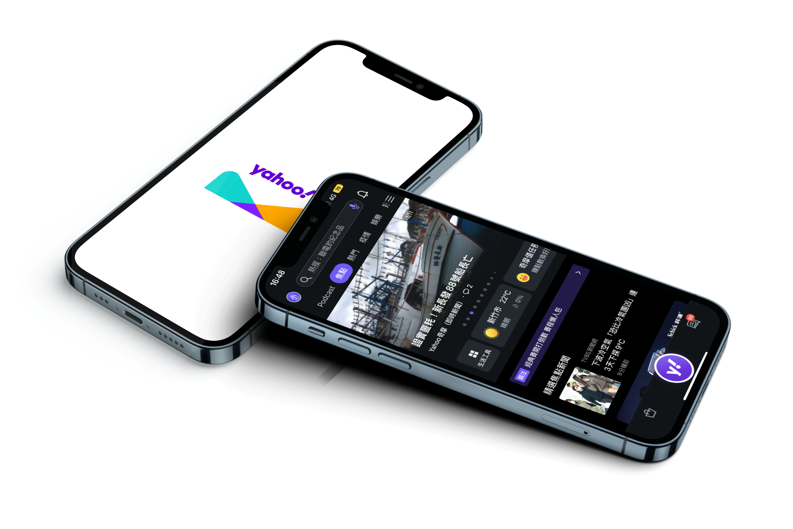
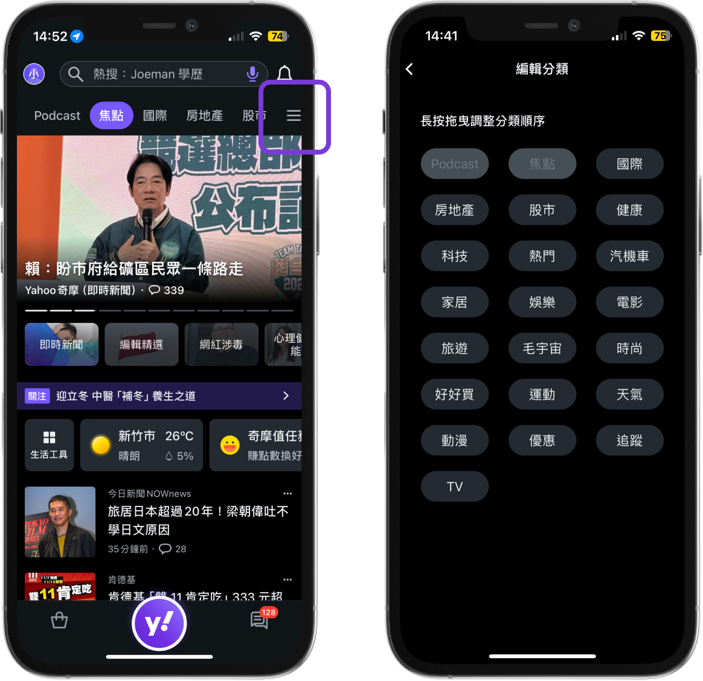
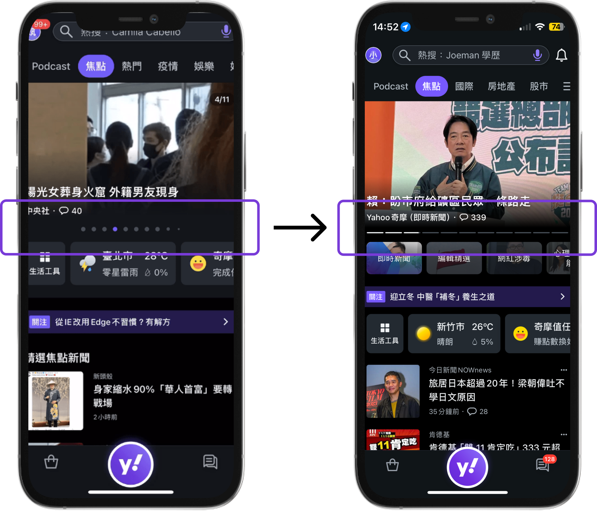
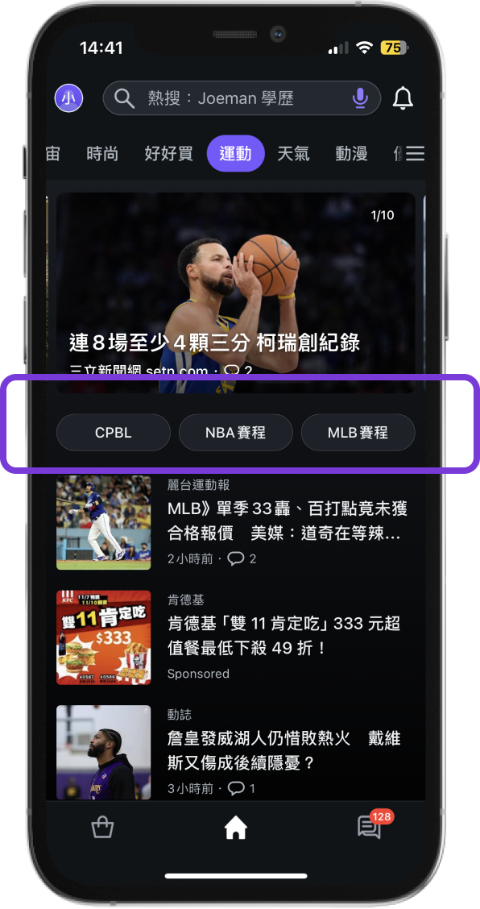

Yahoo App UX Research — Case Study
Yahoo App
UX Research
Understanding Gen Z news consumption to drive user growth for Yahoo App

Background
Yahoo App is a Super App providing a wide range of lifestyle services, with a strategic focus on user growth. One key challenge: Gen Z (ages 16–25) remained a difficult demographic to reach. To address this, Yahoo partnered with our research team through an industry-academic cooperation to conduct a 6-month UX research study.
The goal was to understand Gen Z's news consumption habits and identify design opportunities that could make Yahoo App more appealing to this demographic.
My Role
Led project coordination across a 5-person research team — managing timeline, synthesizing findings across phases, and delivering presentations directly to Yahoo App's UX team. Contributed to research execution across interview, survey, and usability testing phases.
Research Process
The project ran in two phases: an Explore phase to understand Gen Z news behavior and identify design opportunities, and an Evaluate phase to assess existing usability issues in Yahoo App.
In-Depth Interviews
Conducted 11 qualitative interviews with Gen Z users (ages 21–25), focusing on news consumption behavior, motivations, and pain points. Findings were synthesized using affinity diagrams.
Competitive Analysis
Analyzed the top 50 news apps on the App Store, narrowing to 10 for deep comparison across six feature categories. Identified gaps and differentiation opportunities for Yahoo App.
Survey & Kano Model
Surveyed Gen Z users on advertising preferences and used the Kano Model to prioritize 8 feature candidates by attractiveness. Identified must-have and one-dimensional features to develop first.
Heuristic Evaluation
Applied Nielsen's 10 heuristics to identify 5 internal design issues across tasks including content browsing and search.
Usability Testing
Recruited 5 Gen Z participants unfamiliar with Yahoo App. Ran 5 tasks and identified 10 design issues across 4 categories, measured with SUS and NPS.
Key Findings
Integrating interview and competitive analysis findings, the team identified four design opportunity areas for Yahoo App to better serve Gen Z users:
Help users focus on what interests them
- Customize the sorting of category page topics
- Tailor push notifications for specific news topics
- Filter news from specific categories
Expand user topic sources
- Suggest trending keywords
- Recommend popular news in categories users follow
Help users follow news developments
- Quickly save news for later reading
- Personalized push notifications to track event developments
Help users gain diverse perspectives
- Integrate relevant reports from multiple media sources for specific events
On advertising, survey data showed that while Gen Z finds ads bothersome, ad frequency does not significantly impact news consumption behavior — validating that advertising can be retained, with focus shifted to reducing disruption through better ad format selection. Native and Banner formats proved most acceptable.
Outcome
Features adopted by Yahoo App

Customized sorting of category page topics
Users can reorder category topics based on personal interest — prioritizing content areas they care about most and reducing time spent scrolling past irrelevant categories.

Banner news can be paused from auto-scrolling
Reduces cognitive overload on an already dense interface — users can pause banners while reading without losing their place.

Category pages distinguish major and minor categories
Content is now grouped under clear major categories with subcategories beneath — helping users navigate to specific topics faster.
Self-Reflection
This was my first industry-academic research project, and it taught me how to operate in an environment where the research questions, timeline, and deliverables are shaped by a real business partner with real stakes. Managing coordination across a 5-person team while keeping momentum through a 6-month timeline was a different kind of challenge from academic research alone.
The most valuable lesson was learning to translate research findings into actionable design recommendations — not just surfacing what users said, but interpreting what it meant for the product and presenting it in a way that a product team could act on. Seeing 3 out of 4 recommendations actually implemented by Yahoo validated that the research had real impact beyond the report.